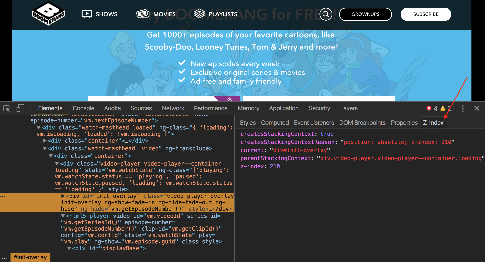

It's Not Dark Magic
Pulling Back the Curtains From Your Stylesheets
Created by Aimee Knight / @Aimee_Knight

- Work For: Warner Bros Digital Labs
- Hobbies: JavaScript Jabber, ⛸, üèã, running
- Likes: üòªüòª, üçµ, kombucha

A language that doesn't affect the way you think about programming is not worth knowing. - Alan J. Perlis
Can't I just use CSS in JS?
- No longer able to change one variable to update all colors
- Unable to affect children by parent classes
- Software developers spend more time reading than writing source code
- Knowledge of internals can be useful for advanced debugging and performance tuning
- In the future, we'll be able to modify the browsers rendering engine ourselves!
Houdini
- Normalize cross-browser differences
- Invent or polyfill new features
Low-level programming is good for the programmer’s soul. – John Carmack
- Browser Internal
- Parsing Process
- Common Issues: specificity, positioning, z-index
Vocabulary
| Browsers |
|
| Rendering Engines |
|
| JavaScript Engines |
|
So, how do browsers actually work? ü§î
Conversion
- Reading raw bytes of HTML & CSS off of disk/network
Tokenizer
- Breaks input valid tokens.
- HTML tokens: start tags, end tags, attribute names, attribute values
- Strips irrelevant characters: white space, line breaks.
Tokenizer Output
["<", "html", ">",
"<", "head", ">",
"<", "title", ">", "My HTML Page", "",
"",
"<", "body", ">",
"<", "p", "style", "=", "\"", "special", "\"", ">",
"This paragraph has special style",
"",
"<", "p", ">",
"This paragraph is not special",
"",
"",
""
]Lexer
- Like the tokenizer, but it also identifies the type of each token (this token is a number, that token is a string literal, this other token is an equality operator).
- Feeds token stream to the parser.
Parser
- Reads the stream of tokens from the lexer.
- Analyzes the document structure according to the language grammar (vocabulary + syntax rules.
- Compiler parses source code into a tree structure, and then translates that into machine code.
DOM
- Not context free
- Never get a syntax error
Recap
- Browser sends HTTP request for page
- Web server sends response
- Browser converts response data (bytes) into tokens, via tokenization
- Browser turns tokens into nodes
- Browser turns nodes into the DOM tree
- DOM tree construction finished
- Awaits CSSOM tree construction
#main a {
color: green;
}
p a {
color: yellow;
}
.container #main a {
color: pink;
}
div #main p a {
color: orange;
}
a {
color: red;
}CSSOM
- By default CSS is treated as a render blocking resource
- Browser will hold rendering of any process until the CSSOM is constructed
CSSOM
- Not 1 to 1 with the DOM
- Display none, script tags, meta tags, head element, etc. are omitted since they're not reflected in the rendered output
CSSOM
- CSS files are parsed into stylesheet objects
- Each stylesheet object contains a CSS rules object
- Each rules object contains selector and declaration objects and other objects corresponding to CSS grammar
Render Tree
DOM + CSSOM
- Visual representation of the document
- Enable painting the contents in their correct order
- CSSOM Can have drastic effects on the render tree but none on the DOM tree
Purpose
- Stores RenderObjects or "renderers" (AKA frames in Firefox)
- Knows how to lay out and paint itself and its children
- Includes geometric information like width, height and position
- Each node in the DOM tree that produces visual output has a corresponding RenderObject
Construction
- Starting at the root of the DOM tree, traverse each visible node
- Omit non visible nodes
- For each visible node find the matching CSSOM rules and apply it
- Emit visible nodes with content and computed styles
- Output a render tree that contains both the content and style information of all visible content on the screen
Rendering Phases
- Layout ↓
- Paint ↓
- Composite ↓
Layout
(AKA Reflow)
- When the renderer is created and added to the tree, it does not have a position and size
- Calculating these values is called layout or reflow
- The output of the layout process is a box model that contains the position and size of every element within the viewport
Paint
(AKA Rasterizing)
- Converts each node in the render tree to actual pixels on the screen
Painting
- Multiple rounds of painting can be caused by JS being loaded that changes the DOM
- Includes: text, colors, shadows, background images, etc.
Painting Time
- Time varies based on render tree construction
- The bigger the width and height of the element, the longer the painting time
- Adding different effects also increases painting time
Painting Time
- Float: 14ms
- Flexbox: 3.5ms
Painting Order
- Follows order that elements are stacked in their stacking contexts
- Painted from back to front
- Example: background color → background image → border → children
- Can be global or incremental
Composite
- Render different elements of a web page in different layers (think photoshop layers)
- Action of flattening all layers into the final image that is visible on the screen
Summary
- Browsers try to do the minimal possible actions in response to a change
- Changes to the element's position will cause relayout and repaint of that element, its children and possibly siblings
- Adding a DOM node will cause relayout and repaint of the parent node
- Major changes, like increasing font size of the html element will cause relayout and repaint of the entire tree
- Changes to an element's color will only repaint that element

The amateur software engineer is always in search of magic. - Grady Booch
Specificity
- Applying rules in correct cascade order
- If multiple CSS selectors are targeting the same set of HTML elements, and if the CSS selectors are trying to assign the same property/properties to the HTML elements, the selector with the highest specificity value will win
Specificity
- Many ways to target a specific tag using CSS selectors
- Browser needs a way to negotiate which color it should give to a specific tag
Specificity
- Browser makes a decision by first calculating each selectors' specificity value
- Second, it checks which selector has the highest value to determine the winner
Selector Prerequisite Refresher
Type |
Examples |
|---|---|
| Attribute selectors |
|
| Pseudo-classes |
|
| Pseudo-elements |
|
#main a {
color: green;
}
p a {
color: yellow;
}
.container #main a {
color: pink;
}
div #main p a {
color: orange;
}
a {
color: red;
}
Answer: Pink!
Selector |
Specificity Value (A,B,C,D) |
|---|---|
| .container #main a | 0,1,1,1 |
| div #main p a | 0,1,0,3 |
| #main a | 0,1,0,1 |
| p a | 0,0,0,2 |
| a | 0,0,0,1 |
A: Styles attribute (1,0,0,0 points)
B: Number of ID selectors (0,1,0,0 points)
C: Number of class selectors, attribute selectors, pseudo-classes (0,0,1,0 points)
D: Number of type selectors, pseudo-elements (0,0,0,1 points)
Specificity value: 0,1,2,2
#header .navbar li a:visited| A | B | C | D |
|---|---|---|---|
| 0 | 1 | 2 | 2 |
Specificity
- You can read values as if they were a number. 1,2,2 = 122.
- Commas are there to remind us that it's not a base 10 system.
- Can have a specificity value of 0,1,13,4 and 13 won't spill over like a base 10 system.
Positioning

Positioning
- Before starting layout (positioning), a tree of render objects is always required
- When renderers are first created and added to the render tree, they have no position or size yet
- All renderers have own layout method
Positioning
Normal & Relative
- Normal: The object is positioned according to its place in the document, box type, and dimensions
- Relative: Positioned like usual and then moved by the required delta
Positioning
Float
- The object is first laid out in normal flow, then moved as far left/rt as possible
Positioning
Absolute
- The object is put in the render tree in a different place than in the DOM tree
Positioning Phases
- Layout is a recursive process
- The current renderer computes its width
- For each child, the current renderer: determines the position of the child, asks the child to compute its dimensions, then the current renderer can compute its height
Global Layout
- Layout can be triggered on the entire render tree as a result of a global style change that affects all renderers
- Global layout will usually be triggered synchronously
- Example: font size change, screen being resized
Incremental layout
- Layout can be incremental, where only the dirty renderers will be laid out
- Incremental layout is triggered asynchronously when renderers are dirty
- Example: new renderers are appended to the render tree after extra content came from the network and was added to the DOM tree
Z -Index
- Every element in an HTML document can be either in front of or behind every other element in the document
What is a stacking context?
- A three-dimensional representation of HTML elements along an imaginary z-axis relative to the user facing the viewport
- An element that contains a set of layers
- Groups of elements with a common parent that move forward or backward together
Stacking Order
- Every stacking context has a single HTML element as its root element
- When z-index and position properties aren’t involved, the rules are simple: the stacking order is the same as the order of appearance in the HTML
Stacking Context
Types
- Root Stacking Context: created by an html element
- Local Stacking Context: created by specific properties and values
- Within a local stacking context, the z-index values of children are relative to the root element rather than to the document root
- Layers outside of a context (sibling elements of a local stacking context) can't sit between layers within that context
Stacking Context
- When a new stacking context is formed on an element, that stacking context confines all of its child elements to a particular place in the stacking order
- If an element is contained in a stacking context at the bottom of the stacking order, there is no way to get it to appear in front of another element in a different stacking context that is higher in the stacking order
Stacking Context Rules
Non-positioned elements
- Check the stacking context’s root element
- Check order of appearance in the HTML
Stacking Context Rules
Positioned elements (and their children)
- Negative z-index values: higher values are stacked in front of lower values and elements with the same value are stacked according to appearance in the HTML
- Negative z-indexes are ordered first within a stacking context, which means they appear behind all other elements
Stacking Context Rules
Positioned elements (and their children)
- Auto z-index values: ordered by appearance in the HTML
- Positive z-index values: higher values are stacked in front of lower values and elements with the same value are stacked according to appearance in the HTML
Painting order
- Negative stack level, typically elements with z-index: -1
- Position value of static
- Stack level 0, typically positioned elements with a z-index value of auto
- Positive stack levels, e.g. a positioned element with a z-index value of 1 or higher
- Elements with the same stack level are layered based on their source order (successive elements stack on top of their predecessors)
New Stacking Contexts
- Some additional properties can create new stacking contexts (this is where things get complicated)!
- Only works on positioned elements (if you try to set a z-index on an element with no position specified, it won't do anything)
New Stacking Contexts
- Opacity less than 1, filter when its value is something other than none, and mix-blend-mode when its value is something other than normal
- Transform property also triggers a stacking context when its value isn't none. Examples: scale(1), translate3d(0,0,0)
Debugging z-index
- Be able to spot when new stacking contexts are formed
- Look up the ancestor tree and see if any parents form stacking contexts
Debugging z-index
Conclusion
- Construct the DOM by parsing the HTML
- May be incremental and a response may not arrive all at once, so may not finish construction all at once
- Request CSS and JavaScript resources
- If scripts are synchronous it will not be executed until the CSS is received since CSS is render-blocking
Conclusion
- Complete CSSOM construction to un-block the JavaScript engine
- Execute JavaScript
- Merge the DOM and CSSOM into the Render Tree
- Run layout, paint, and composite
Computers are good at following instructions, but not at reading your mind. - Donald Knuth